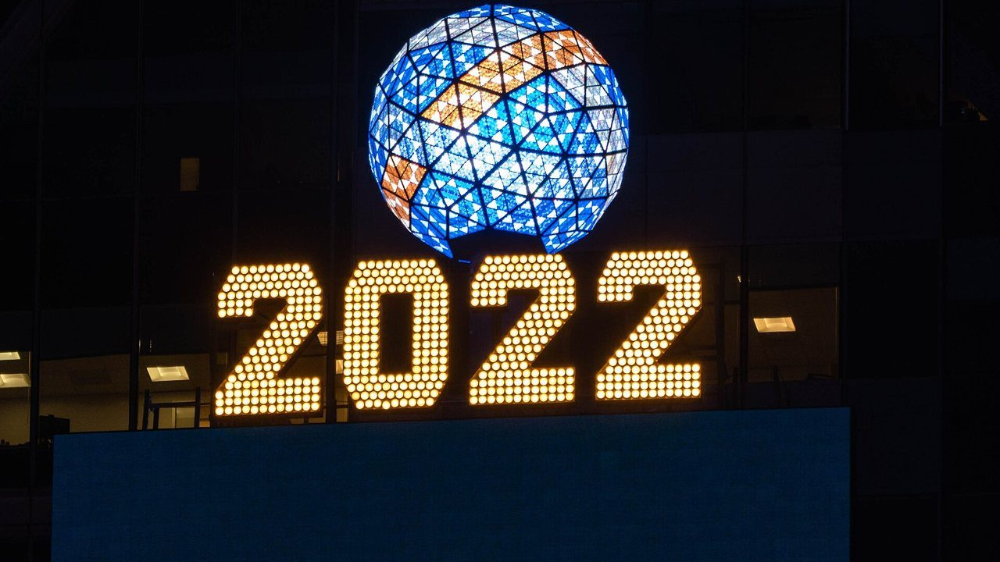

Race, Times Square New Year's Eve

Behind
Best +0:01
371W
Target 418 W-47 W
- Cadence
- 87rpm
- Heart
- 140bpm
- Speed
- 26.5km/h
Work16 of 19
0:25
Next: · 1:00 at level 11
+0.0%
3 m climbed
7.22 km
18
Resistance / 32
Solo races your best-time ghost: position reads Ahead or Behind, and solo alone gets a Pause button. Frozen at 16:35.